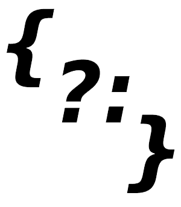

Kacper Drobik
- Programista & chodziarz
Kacper Drobik
Moje repozytoria:
Moje osiągnięcia:
Wicemistrzostwo Polski u16- Karpacz 2021
Brąz Mistrzostw Polski u16- Słupsk 2020
Brąz Halowych Mistrzostw Polski u18- Rzeszów 2022
2 x Mistrz Mazowsza i Warszawy- 2021 & 2020
2. miejsce Międzynarodowe zawody w chodzie sportowym- Gdańsk 2021
1. miejsce Ogólnopolskie zawody LA pamięci I. Szewińskiej
Copyright © 2022 Kacper Drobik